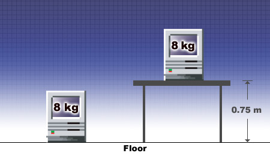

Gravitational Ep
An object or system with potential energy has the potential to do work. This may be due to its position or condition. Gravitational potential energy is an example of potential energy due to position. The potential energy is equal to the work done against gravity to place the object into its position relative to some arbitrarily chosen reference level. In the escalator and elevator examples the first floor is the reference level, and the gain in potential energy is equal to the work done against gravity in moving the two students to the second floor.

In this example we express the computer's gravitational potential energy as a value relative to the floor, our chosen reference level. Therefore, the computer has zero gravitational potential energy on the floor and some gravitational potential energy on the tabletop. On the tabletop it has the potential to do work due to its position.
We can calculate this potential energy using:
Ep = mgh
Ep = 8.0 kg × 9.81 m/s2 × 0.75 m
Ep = 55 J
The use of this equation is only valid for situations near the surface of Earth. Here Earth's gravity dominates all other gravitational effects, and the distance h is relatively small to the distance from the centre of Earth. This allows us to consider g, which changes with the distance from Earth's centre, to be constant.